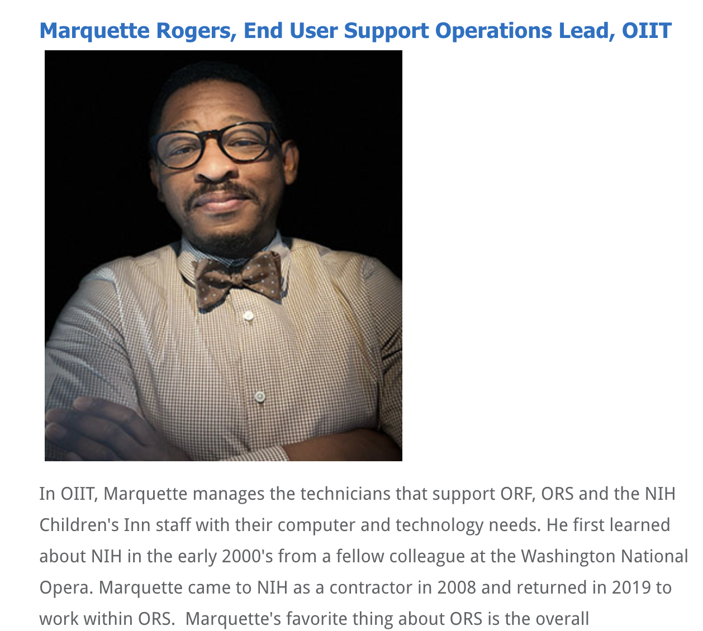

Summary
An experienced Information Technology Manager with a technical background and 23 years of experience.
Education
University of Maryland Global Campus formerly (UMUC)
Adelphi, MD United States
Bachelor's Degree 12 / 2013
Major: Information Systems Management
Marquette Rogers
Silver Spring, MD 20902 United States
Mobile: 202.344.5352
marquetterogers at icloud.com
Job Background
Skills
Certs:
ITIL Foundation v3 IT Service Management AXELOS Cert: GR75017853MR • HDI‐SCM
(Service Center Manager) 2020 • Microsoft Technology Associate CertiPort ID: 90063197
Awards:
GRSi Certificate of Excellence – November 2020 • GRSi Impact Award for Technical Excellence ‐‐
December 2021 • NIH ORS Silent Heroes – December 2021 • NIH ORS Director Award Leadership: Office
of the Director (OD) – June 2022 • NIH ORS Director Certificate of Appreciation – January 2023
Recognition

Community Activities: